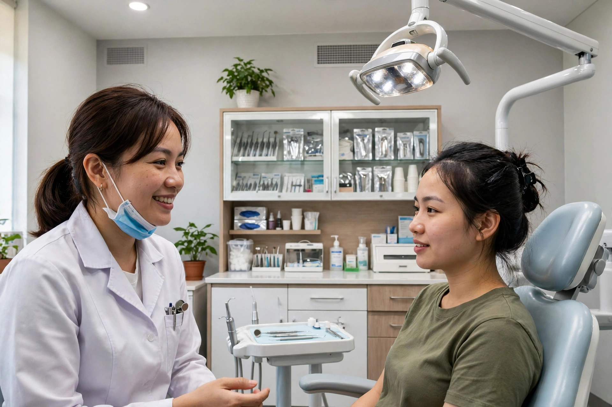

Website cho phòng khám nha khoa cần có gì: bảng giá rõ, đặt lịch online, khách quay lại đúng hẹn

Bác sĩ nha khoa đang tư vấn cho bệnh nhân trong phòng khám — khoảnh khắc quen thuộc trong phòng khám nha khoa, và là lý do website phòng khám phải cho khách tự xem bảng giá, tự chọn bác sĩ và tự đặt lịch mà không cần chờ trả lời tin nhắn.
Sáng thứ bảy, phòng khám nha khoa của bạn vừa mở cửa được nửa tiếng: ghế nha khoa đã có khách ngồi, bác sĩ đang khám cho khách đầu tiên, mà điện thoại ở quầy lễ tân reo liên hồi. Tin nhắn Zalo dồn tới: "Chị ơi nhổ răng khôn bao nhiêu tiền ạ, chiều nay còn chỗ không ạ, bác sĩ A có làm implant không ạ, niềng răng thì tới khám lần đầu có mất phí không ạ?" Lễ tân đang dở tay ghi lịch hẹn cho khách ngồi chờ, trả lời được một tin thì ba tin khác đã tới. Khách hỏi giá lấy cao răng thì bạn lật bảng giá, khách hỏi còn chỗ không thì bạn ngó lịch hẹn, khách hỏi bác sĩ nào chuyên niềng thì bạn kể tên từng bác sĩ — mỗi lịch hẹn là một cuộc trò chuyện dài, mà cuối cuộc trò chuyện đó, có khi khách đã sang phòng khám khác đặt vì bên đó bấm vài lần là xong. Phòng khám của bạn không thiếu khách hỏi — chỉ thiếu một nơi để khách tự xem bảng giá, tự chọn bác sĩ, tự đặt lịch mà không cần chờ bạn trả lời từng tin.
Chủ phòng khám nha khoa nào cũng quen cảnh này — không phải vì khách không tin tay nghề của bạn, mà vì khách đi khám răng quyết rất nhanh: răng đang đau cần nhổ ngay hôm nay, cuối tuần rảnh muốn đi lấy cao răng, đang muốn niềng răng trước một dịp quan trọng. Ngay dưới đây, mình sẽ cùng bạn bóc tách vì sao phòng khám đông khách hỏi vẫn mất lịch hẹn, những mục một website cho phòng khám nha khoa thực sự cần có, và cách bạn tự kiểm tra trước khi bỏ tiền làm web.
Vì sao phòng khám đông khách hỏi vẫn mất lịch hẹn: ba lỗi quen thuộc
Lỗi thứ nhất là bảng giá nằm trong ảnh chụp hoặc rải rác trong tin nhắn, khách không tra được giá theo dịch vụ. Một phòng khám nha khoa có nhiều dịch vụ cùng lúc: lấy cao răng, trám răng, nhổ răng khôn, tẩy trắng răng, niềng răng, cấy ghép implant, bọc răng sứ — mỗi dịch vụ một giá riêng, giá lại khác nhau theo số răng làm, theo vật liệu chọn, theo mức độ phức tạp của ca. Khách nhắn hỏi "lấy cao răng bao nhiêu ạ" thì bạn phải tra bảng giá rồi nhắn lại, khách hỏi thêm niềng răng thì bạn tra tiếp một lượt nữa, khách hỏi implant thì bạn lại phải hỏi thêm tình trạng răng của khách rồi mới báo được khoảng giá. Mỗi câu hỏi là một lần chờ, mà khách đang đau răng thì chờ 10 phút đã sang phòng khám khác đặt. Giá không hiện rõ ngay lúc khách cần thì khách sang phòng khám có bảng giá ghi sẵn.
Lỗi thứ hai là đặt lịch hẹn qua tin nhắn dễ nhầm giờ, nhầm bác sĩ và nhầm dịch vụ. Một lịch hẹn của phòng khám bạn có nhiều chi tiết cùng lúc: bác sĩ nào khám, mấy giờ, làm dịch vụ gì, khám lần đầu hay tái khám, số điện thoại khách là số nào. Qua tin nhắn, các chi tiết này nằm rải rác trong cả chục tin nhắn qua lại, lễ tân đọc sót một dòng là xếp nhầm bác sĩ, nhầm giờ, khách tới nơi phải ngồi chờ — mà khách hẹn 9 giờ tới nơi phải chờ tới 9 giờ rưỡi thì lần sau họ đặt phòng khám khác. Chưa kể tin nhắn dồn vào giờ cao điểm: sáng thứ bảy, mấy khách cùng đặt lịch cho chiều nay, bạn trả lời người này thì người kia đang chờ, tới lúc bạn nhắn lại "bác sĩ A còn trống lúc 2 giờ ạ" thì khách đã chốt phòng khám khác. Khám răng thì khách đã lo lắng sẵn, chờ lâu hay tới nơi phải chờ thêm chỉ làm họ lo hơn.
Lỗi thứ ba là khách không biết phòng khám còn chỗ không, bác sĩ mình muốn còn trống giờ nào, dịch vụ mình cần phòng khám có làm không nên cứ nhắn hỏi. Khách muốn nhổ răng khôn thì cần biết bác sĩ chuyên phẫu thuật còn trống giờ nào, khách muốn niềng răng thì cần biết phòng khám có làm niềng không và lần khám tư vấn đầu tiên gồm những gì, khách đưa con đi khám thì cần biết chiều nay phòng khám còn ghế trống cùng giờ cho hai mẹ con không. Không có chỗ nào để khách tự xem, họ chỉ còn cách nhắn tin hỏi bạn — mà bạn đang dở tay khám cho khách thì không trả lời ngay được, khách chờ lâu lại tưởng phòng khám không muốn nhận khách. Một phòng khám nhỏ, mỗi sáng vài chục tin nhắn hỏi "chiều nay còn chỗ không", "bác sĩ A còn trống giờ nào", "niềng răng bao nhiêu tiền" thì cả buổi sáng lễ tân chỉ ngồi trả lời tin nhắn, không còn thời gian đón khách tới khám.
7 mục một website phòng khám nha khoa thực sự cần có
Một website cho phòng khám nha khoa không cần nhiều trang, cũng không cần hiệu ứng cầu kỳ. Nó cần đúng những mục dưới đây — mỗi mục giải quyết một câu hỏi cụ thể mà khách luôn hỏi trước khi bấm đặt lịch.
1. Bảng giá rõ theo dịch vụ — khách tự tính được tiền trước khi đặt lịch
Khách vào web của phòng khám bạn hiếm khi để "xem răng chung chung" — họ vào vì một dịch vụ cụ thể: lấy cao răng, trám răng sâu, nhổ răng khôn, tẩy trắng răng, niềng răng, cấy ghép implant, bọc răng sứ. Bảng giá phải xếp theo nhóm rõ ràng: khám và điều trị cơ bản, thẩm mỹ, chỉnh nha, phục hình — mỗi dịch vụ ghi giá ngay dưới tên, giá lấy cao răng và trám răng ghi theo số răng, giá niềng răng ghi theo mức độ, giá implant ghi theo loại trụ, giá bọc sứ ghi theo vật liệu. Dịch vụ nào gồm khám tư vấn lần đầu thì ghi rõ gồm khám, dịch vụ nào chưa gồm thì ghi rõ chưa gồm, để khách không bị bất ngờ lúc thanh toán. Giá hiện rõ ngay lúc khách cần thì khách tự tính được tiền trước khi đặt lịch, không cần nhắn hỏi "lấy cao răng bao nhiêu ạ" rồi chờ bạn trả lời. Khách đau răng mà thấy giá rõ ràng thì yên tâm đặt lịch ngay, thay vì nhắn hỏi rồi chờ đợi trong lúc răng vẫn đau.
2. Đặt lịch online — chọn bác sĩ, chọn giờ, chọn dịch vụ ngay lúc đặt
Khách đặt lịch khám răng hiếm khi gọi điện trước — họ nhắn tin hỏi "chiều nay bác sĩ A còn trống giờ nào ạ" rồi chờ bạn trả lời. Web phải cho họ chọn ngày, khung giờ 30 phút, bác sĩ mình muốn và dịch vụ ngay lúc đặt: lấy cao răng với bác sĩ A lúc 2 giờ chiều nay, tư vấn niềng răng với bác sĩ B sáng mai. Web báo bác sĩ còn trống giờ nào, giờ nào đã kín, khách chọn giờ còn trống là xong. Phòng khám nhìn vào lịch là biết ghế nào có khách lúc mấy giờ, ghế nào còn trống để nhận khách vãng lai. Khách đặt lịch trước thì tới nơi được khám ngay, không phải ngồi chờ lúc phòng khám đông — mà khách hẹn 9 giờ tới nơi phải chờ tới 9 giờ rưỡi thì lần sau họ đặt phòng khám khác. Gia đình đi khám cùng thì đặt liền hai ghế cùng giờ, tới nơi khám cùng lúc, xong cùng lúc, không ai phải ngồi chờ ai.
3. Thư viện trước và sau thật — ảnh thật, ghi rõ dịch vụ, bác sĩ và thời gian
Khách muốn niềng răng hay bọc sứ thì cần nhìn thấy kết quả thật trên răng người thật trước khi quyết định: niềng răng thay đổi nụ cười ra sao, bọc sứ lên màu tự nhiên thế nào, tẩy trắng răng giữ được bao lâu. Thư viện trước và sau phải là ảnh thật khách của phòng khám bạn, chụp trước và sau khi làm, có sự đồng ý của khách — mỗi ca ghi rõ làm dịch vụ gì, bác sĩ nào làm, làm trong bao lâu. Ảnh lấy trên mạng thì khách tới nơi làm xong không giống ảnh, mà ảnh thật của phòng khám thì khách nhìn là biết tay nghề của bác sĩ mình sắp đặt. Khách xem ảnh là biết ca của mình phòng khám có làm được không, không cần nhắn hỏi "phòng khám có niềng được ca như của em không" rồi chờ bạn trả lời.
4. Giữ lịch bằng xác nhận nhanh — khách đặt xong nhận tin xác nhận, phòng khám không lo khách quên
Khách đặt lịch xong mà không có xác nhận thì tới giờ hẹn hay quên, phòng khám giữ ghế cho khách rồi khách không tới, ghế trống cả buổi. Web phải gửi xác nhận ngay sau khi khách đặt xong, qua Zalo hoặc tin nhắn, ghi rõ giờ hẹn, bác sĩ, dịch vụ và giá khách đã chọn — nhắc lại trước giờ hẹn 1 tới 2 tiếng để khách nhớ. Khách bấm xác nhận là giữ ghế, khách muốn đổi giờ thì bấm đổi ngay trên web thay vì nhắn tin nhờ bạn sửa lịch. Phòng khám không còn cảnh giữ ghế cho khách rồi khách không tới, mà khách cũng không còn cảnh tới nơi mới biết lịch hẹn của mình bị xếp nhầm giờ. Với khách niềng răng phải tái khám hàng tháng, nhắc lịch tự động còn quan trọng hơn nữa: một lần quên tái khám là cả quá trình niềng bị chậm lại.
5. Đánh giá của khách đã khám — ghi rõ dịch vụ, bác sĩ nào, sau bao lâu
Với phòng khám nha khoa, đánh giá có giá trị nhất không phải là "khám tốt lắm ạ" mà là những dòng ghi rõ thông tin thật: khách làm dịch vụ gì, lấy cao răng hay niềng răng, bác sĩ nào làm, sau khi làm xong cảm thấy thế nào, tái khám có đúng hẹn không. Mục này cần ghi rõ dịch vụ đã làm, bác sĩ đã làm và cảm nhận sau vài tuần — kèm được ảnh thật nụ cười của khách sau khi làm (với sự đồng ý của khách) thì tốt hơn nữa. Năm đến bảy đánh giá như vậy, đặt ngay dưới mục đặt lịch, có tác dụng hơn cả một trang giới thiệu dài: khách đang phân vân không biết bác sĩ nào hợp với mình sẽ đối chiếu ca của mình với ca trong đánh giá và tự tin bấm đặt, thay vì nhắn hỏi bạn rồi chờ trả lời.
6. Đặt lại trong một phút cho khách tái khám — bấm "khám lại như lần trước", chỉ chọn lại giờ
Khách cũ từng lấy cao răng hay đang niềng răng thì lần sau chỉ cần bấm "khám lại như lần trước": dịch vụ quen, bác sĩ quen đã lưu sẵn, khách chỉ chọn lại ngày giờ, sửa số điện thoại nếu cần, rồi bấm đặt — xong trong một phút, không cần gọi điện, không cần mô tả lại tình trạng răng của mình từ đầu. Mục này giữ khách quen hiệu quả nhất trong cả bảy mục: lấy cao răng thì 6 tháng một lần, niềng răng thì tái khám hàng tháng, khách quen quay lại đều đặn, mà mỗi lần quay lại họ đều thấy việc đặt lịch dễ hơn lần trước.
7. Nút gọi — Zalo — bản đồ nổi một chạm, kèm giờ mở cửa và địa chỉ rõ ràng
Khách tìm phòng khám bạn lần đầu thì cần biết phòng khám ở đoạn nào, đi đường nào tới, mở cửa tới mấy giờ — web phải có cụm nút gọi, Zalo và bản đồ nổi một chạm để khách hỏi nhanh "chiều nay bác sĩ A còn trống giờ nào" và tìm đường tới phòng khám trong cùng một lần chạm. Giờ mở cửa ghi rõ từng ngày, dịch vụ theo đợt ghi rõ còn làm tới khi nào, địa chỉ ghi rõ số nhà và đoạn đường để khách tìm được ngay. Mục này quan trọng nhất với khách mới: khách lạ tìm được phòng khám, tới nơi có ghế ngồi, khám đúng dịch vụ mình cần thì lần sau họ quay lại như khách quen. Khách đang đau răng mà tìm được đường tới phòng khám trong một lần chạm thì đã bớt lo một nửa.
👉 Xem thư viện mẫu web theo ngành nghề tại Web Khởi NguồnKhách đặt lịch khám răng trên điện thoại — chọn bác sĩ, chọn giờ, chọn dịch vụ, xong trong một phút, không cần nhắn tin hỏi giá từng dịch vụ.
Phòng khám bạn phục vụ khách khám lẻ nhanh hay khách làm dài hơi: hai nhóm cần web khác nhau
Hai nhóm khách của phòng khám bạn cần web khác nhau: khách khám lẻ nhanh và khách làm dài hơi. Khách khám lẻ — lấy cao răng 30 tới 45 phút, trám răng sâu, nhổ răng khôn, tẩy trắng — cần đặt lịch trong một phút: chọn dịch vụ, chọn giờ, chọn bác sĩ, xong. Họ hay khám giờ trưa hoặc cuối tuần, tranh thủ lúc rảnh, không gọi điện trước — web cho họ đặt trong một phút là hợp. Khách làm dài hơi — niềng răng thường kéo dài 1 tới 2 năm với lịch tái khám hàng tháng, cấy ghép implant nhiều lần hẹn, bọc răng sứ làm trong nhiều buổi — thì cần xem kỹ thư viện trước và sau thật, xem đánh giá của khách đã làm đúng dịch vụ mình cần, xem bác sĩ nào chuyên loại này, rồi mới nhắn tin hỏi thêm trước khi đặt lịch khám tư vấn đầu tiên. Website tốt thì vừa cho khách khám lẻ đặt ngay trong một phút, vừa cho khách làm dài hơi xem đủ thông tin rồi mới quyết định — mà không phải bên nào cũng làm được.
Vì sao nên làm web với Web Khởi Nguồn và chi phí thực tế là bao nhiêu
Nhiều chủ phòng khám băn khoăn: "Mình chỉ có một phòng khám nhỏ, làm website có cần thiết không, chi phí có cao quá không?" Web Khởi Nguồn làm web trọn gói cho các ngành nghề như hoa tươi, thuốc tây, tiệm bánh, quán ăn, spa, mỹ phẩm, giày dép, tiệm tóc — và cả phòng khám nha khoa — theo cùng một cách: web đặt lịch nhanh, giá rõ, dùng được ngay. Trong gói, web đã bao gồm tên miền, hosting và chứng chỉ SSL, giao diện hiển thị tốt trên điện thoại và máy tính bảng, giỏ hàng và form đặt hàng, phần đặt lịch theo giờ như đã nêu trên, bàn giao trong 1 đến 3 ngày, kèm hướng dẫn sử dụng từ A đến Z và bảo hành kỹ thuật trọn đời. Ngoài ra còn có phần dùng thử trước khi mua: bạn dùng thử web trước, hài lòng mới thanh toán, không cần đặt cọc trước. Giá gói hiện tại là 586.000đ (giá gốc 2.000.000đ). Một lịch hẹn nhổ răng khôn hay niềng răng bị mất vì khách nhắn hỏi mà không được trả lời kịp thì khoản 586.000đ này đã nhỏ hơn nhiều — mà web thì dùng được lâu dài.
Bạn có thể xem chi tiết bảng giá tại Bảng giá, xem gói dịch vụ gồm những gì tại Gói dịch vụ, hoặc nếu cần thêm tính năng riêng cho phòng khám như đồng bộ với phần mềm quản lý phòng khám của bạn, hãy xem thêm tại Nâng cấp website. Nếu cần đặt làm web, hãy đặt tại Đặt làm web — đặt trước, dùng thử rồi mới thanh toán.
Cách bạn tự kiểm tra trước khi bỏ tiền làm web
Trước khi bỏ tiền làm web cho phòng khám của mình, bạn hãy kiểm tra bốn điểm sau — nếu điểm nào cũng có câu trả lời rõ ràng thì web của bạn sẽ làm được việc ngay từ đầu. Một, đặt thử một lịch hẹn như khách: mở web trên điện thoại, chọn bác sĩ, chọn giờ, chọn dịch vụ — nếu làm được trong một phút thì phần đặt lịch đã tốt, nếu phải nhập thông tin dài dòng hay không chọn được bác sĩ mình muốn thì cần sửa. Hai, đọc thử bảng giá như một khách mới: tìm dịch vụ mình cần và xem giá của nó có hiện ngay không, có ghi rõ giá chưa gồm khám tư vấn không — khách đang đau răng không có thời gian chờ bạn nhắn lại giá. Ba, đặt thử lại như một khách tái khám: vào lại web, bấm "khám lại như lần trước" và chọn lại ngày giờ, xem có cần nhập lại toàn bộ thông tin không — nếu nhập lại từ đầu thì khách quen sẽ ngại đặt. Bốn, nhờ một người chưa từng tới phòng khám bấm thử nút gọi, Zalo và bản đồ: hỏi họ xem có tìm được địa chỉ phòng khám và giờ mở cửa không — nếu họ tìm được trong một lần chạm thì web của bạn đã làm được việc, nếu không thì cần sửa ngay.
Khách sẽ quay lại nếu đặt lịch dễ như nhắn một tin
Quay lại buổi sáng thứ bảy đó: phòng khám của bạn vừa mở cửa, lễ tân vẫn đang bận với khách ngồi chờ — nhưng giờ khách không cần nhắn tin hỏi giá, không cần chờ bạn trả lời "bác sĩ A còn trống giờ nào", mà tự mở web, tự xem bảng giá, tự chọn bác sĩ, tự đặt lịch cho chiều nay — xong trong một phút. Bạn có thể bắt đầu từ những mục đơn giản nhất: bảng giá rõ theo dịch vụ, đặt lịch online chọn được bác sĩ và giờ, nút gọi — Zalo — bản đồ một chạm, rồi bổ sung thư viện trước và sau thật, mục nhắc lịch và mục đặt lại cho khách tái khám sau. Làm đúng ngay từ đầu, phòng khám của bạn sẽ ít tốn thời gian trả lời tin nhắn hơn mà vẫn giữ được khách — và khách sẽ quay lại, vì đặt lịch ở phòng khám bạn dễ như nhắn một tin.
Muốn phòng khám của bạn có website như vậy?
Xem trước các mẫu demo theo ngành nghề, ưng mẫu nào làm mẫu đó — trọn gói 586.000đ, xem mẫu trước khi quyết định.